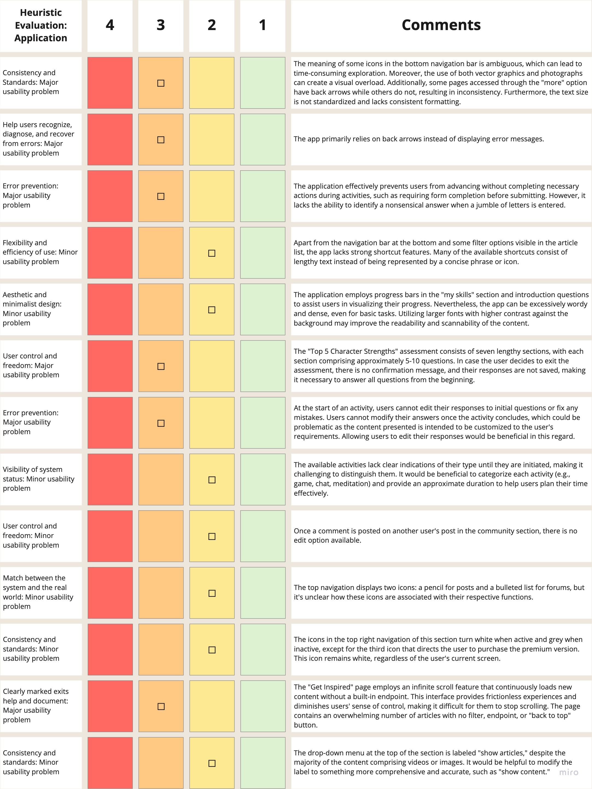

Happify
Happify aims to promote a healthier mindset and prioritize mental health, thus improving the overall quality of life. Happify provides tools to overcome negative thoughts, stress, and life's challenges through exercises that boost emotional well-being to cultivate a positive and resilient mindset.
Role
UI/UX Researcher
Skills
Heuristic evaluation
Cognitive walkthrough
Usability testing
Test moderation
Data analysis
Paired t-test
Team
Samara Miu
Shelby Rhodes
Natalie Sroisudartana
Time Span
Apr 14, 2021 - Jun 2, 2021
Project Overview
Our team embarked on a comprehensive comparative study of the Happify application and website to identify areas that required improvement. The principal goal of this study was to assist Happify in enhancing long-term user engagement. To achieve this objective, we utilized various evaluation methods, including heuristic evaluation, cognitive walkthrough, and usability testing, to identify any usability issues. Our primary focus was to provide a detailed analysis of the usability issues identified during the evaluation process, highlighting their severity and potential impact on user engagement, and provide actionable recommendations on how Happify could address these issues and improve the overall user experience.
Phase 1
We conducted a usability test that utilized both cognitive walkthroughs and heuristic evaluations to assess the system's usability. During the cognitive walkthroughs, we simulated the thought processes of users as they completed specific tasks to evaluate the system's usability. In addition, we employed expert evaluators to analyze the system based on established design principles of heuristic evaluation to identify usability issues.
Application
The Happify application's user interface has ambiguous icons in the bottom navigation bar, inconsistent use of vector graphics and photographs resulting in visual overload, and inconsistency in the use of back arrows. There is also a lack of standardization and consistent formatting in text size, and the app lacks the ability to identify nonsensical answers. Additionally, the app can be wordy and dense and lacks shortcut features. Activities also lack clear indications of their type until initiation, and editing comments in the community section is impossible. The "Get Inspired" page uses an infinite scroll feature, making it difficult for users to stop scrolling, and the drop-down menu at the top of the section is labeled "show articles," which could be confusing for users given that the majority of the content comprises videos or images.
Website
The website has an overwhelming design, with multiple colors, background images, graphics, and inconsistent typography design. The content is challenging to scan and digest due to the busy design and significant amount of content. We noticed two buttons for initiating the process with slightly different languages leading to the same link, suggesting a need for consistency in wording. The navbar includes a link to Happify Health, a different version of the product tailored for businesses, but there is no option to return to the previous site. The footer of each page in Happify Health appears misaligned when browsing on mobile devices. The three links on the Jobs page in Happify Health lead to the same context and job descriptions, indicating repeating content. To improve the user experience, we suggest organizing the footer in a similar manner to the main Happify website and categorizing the links on the Jobs page.
Cognitive Walkthrough
Task 1: Creating a post in the community section
There could potentially be confusion among users regarding the process of creating a post in the Happify Community section. Users are required to go through the activity track to create a post, which can be a confusing process. It is unclear which activities offer the option to create a post once completed, adding further obstacles for the user. In our opinion, it would be ideal if Happify provided a way for users to create a post directly within the Community section to simplifying the process and making it more user-friendly.
Task 2: Finding an article on gratitude to read
We have observed the way users would access the Happify Daily section of the app to browse articles and video clips on various topics of their interest. We have noted that some confusion could exist among users regarding this exercise. Specifically, we have found that the rainbow icon in the homepage navigation bar is not sufficiently representative of "articles." Furthermore, we have identified that it might be difficult for users to navigate to the articles section of the app from the account page, as users need to scan through a lot of text to find the "happify daily" link. Therefore, we recommend that Happify should consider using a stronger indicator icon for the homepage navigation bar and provides an easier way for users to access the "happify daily" page from their account page.
Task 3: Complete a task given by the application
We conducted an evaluation of the Instant Play section of the app, which enables users to complete daily emotional fitness training and improve their happiness skills, as well as gain insight into positive emotion and life satisfaction scores. The application provides the user with six training options to choose from, with good recommendations and guidelines to assist them in selecting tasks. After completing a task, the user can rate their experience, post photos, and write a journal, which can be shared with other users who can like and comment on the post. The application offers users the flexibility to keep their recorded tasks private if they prefer. However, we noticed two issues with this section of the application. Firstly, the repeated recommendations provided by the application to assist users in selecting a task can be frustrating. Secondly, the application lacks a time tracking or deadline feature, which some users may prefer.
Recommendations
● Improve Visibility and Usability of the Navigation bar
- Change the background to a solid color with full opacity, using the primary orange color consistent with the app's design.
- Make the icons white to ensure better contrast and visibility.
- Add clear labels below each icon to provide explicit navigation indications, such as "Home," "Activities," "Resources," and "Community."
- Redesign the navigation bar icons for better representation. Consider using a puzzle piece to signify activities, a book or video screen to indicate where videos and articles can be found.
● Optimizing Article Browsing: Improved Filtering, Navigation, and Usability
- Add a search bar at the top for users to filter articles by keywords.
- Limit the display to 50 articles per page to avoid overwhelming users.
- Clearly indicate the number of articles already scrolled through on each page.
- Provide filter options for sorting articles by date, rating, and popularity.
- Show the endpoint of the article list, similar to Google search results.
- Include a button for users to easily access the first and last page with a single click.
● Simplified Profile Page
- Change the "More" page to a “Profile” page.
- Remove all other sections as they are readily accessible on the homepage navigation bar.
- In the profile page, implement clickable icons or sections to facilitate effortless scanning and quick identification of desired sections for users.
Phase 2
After conducting an initial review of the Happify app, we identified several key findings. Our objective then was to evaluate the app's navigational efficiency, error prevention and correction, and user engagement with major sections such as activity tracks and the community section.
Method
We conducted an assessment test on 4-6 participants, with each person being interviewed and observed while completing all six tasks using the Happify app on their personal phone. During the test, we recorded the phone screen as well as a video of the participant, which we conducted in person or remotely via Zoom, to capture audio data. The test lasted approximately 20-25 minutes.
Test Objectives
1. Can users use the navigation bar in order to find and complete specific actions?
2. Are users able to easily find a track that resonates with them and start it?
3. Do users find that the activities completed actually provide some benefit, such as those listed within each activity description?
4. Are users able to easily delete or edit posts and comments on their timeline and community feed?
5. Do users know how to interact with the articles and video entries on the Happify app?
Task List
1. Start with the app open and create an account
2. Find a free track that interests you to begin
3. Complete the first activity in the track
4. Post the activity in the community section
5. Go back and edit the text in the post
6. Find content to view in the Happify Daily section and try to share it with a friend on Facebook
Quantitative
- Number of tasks completed correctly
- Number of times incorrect links or icons were clicked
- Number of questions asked/clarification needed during each task
- Likert scale used to rate how well activity benefits them
Qualitative
- Comments from participants that stood out (i.e. any strong feelings about a particular task, etc.)
- Overall thoughts on the app once test is complete in terms of enjoyment, usefulness, and ease of use
Results and Findings
Test Object 1: Are users able to easily get started by creating an account?
During Task 1, all 5 participants were able to create an account on the app without any issues. This was rated as very easy by all participants. Two of the users expressed confusion at the end of the task as they were expecting a conclusive notification confirming that their account had been successfully created.
Test objective 2: Are users able to easily find a track that resonates with them and begin it?
During Task 2, all 5 participants were able to successfully find and start a free track on the app. The median score for the task's difficulty was 4 out of 5, indicating that it was relatively easy for the users to complete. Some users felt overwhelmed by the amount of information and assessment questions presented to them at the beginning of the track, despite completing the task successfully.
Test objective 3: Do users feel satisfied when they complete the track activities?
During Task 3, 4 out of 5 participants were able to complete the first activity in their selected track on the app. The median score for the task's ease of use was 4 out of 5, indicating that it was relatively easy for the users to complete. 3 out of 4 users who played an interactive balloon game during the activity found it confusing as it had no clear end, and disliked the popup ads for the Happify premium subscription. Two participants found the activity directions vague, and two other participants noted that the activities were time-consuming and lacked functionality for long-term use for self-care.
Test objective 4: Are users able to easily create, edit, or delete posts and comments on their timeline and community feed?
During Task 4, only 3 out of 5 participants were able to successfully post their activity in the community section of the app. The median score for the task's ease of use was 1 out of 5, indicating that it was challenging for the users to complete. For 3 participants, there was no indication of where or how to post the activity to the community section.
During Task 5, only 1 out of 5 participants were able to successfully edit the text in their post, and the median score for the task's ease of use was 1 out of 5. Two participants were not able to attempt this task because they were unable to complete Task 4. Additionally, two participants found it difficult to locate where and how to edit the post content.
Test objective 5: Do users know where to find the articles and video entries within the Happify Daily section in order to engage with the content?
During Task 6, all 5 participants were able to successfully find content to view in the Happify Daily section and share it with a friend on Facebook. The median score for the task's ease of use was 4 out of 5, indicating that it was relatively easy for the users to complete. Four out of five participants completed the entire task within 2 minutes or less.
Recommendations
● Enhanced Post Creation and Clarity
- Allow users to create new posts.
- Improve the post creation process by enabling users to create posts at the end of all activities, rather than limiting it to specific activities (e.g., games).
- Enhance clarity by modifying the language of the call-to-action (CTA) button from "Happify It" to something like "Create Post" to clearly indicate the purpose of the action.
- Change the pencil icon on the Community page to a more suitable icon, such as a sticky note, as participants confused the current icon as a means to create a new post.
● Simplify Post Editing
- Replace the small button with three dots at the bottom right corner. Instead, use text that clearly indicates its purpose, such as "Edit," making it more apparent to users where they can go to edit their post.
● Enhancing Activity Experience
- Remove popup ads during the activity to minimize distractions. Note: Popup ads only appear for iPhone users.
- Allow users to exit the activity earlier if desired.
- Provide a tutorial or brief instructions to clarify the activity, including the purpose and effects of "power-ups" like the Rock of Resilience.
● Improved Questions and Clear Navigation Options
- Revise the questions in the "Help Me Choose" section to avoid repetition with the assessment section during account creation. Alternatively, consider adding a section with selected tracks tailored to user needs in the "Explore Tracks" section.
- Add two buttons for users to choose between "Starting a Track" or "See how Happify Works." Also, include an exit button on the top of the "How Happify Works" page for users to leave the page at any time.
Phase 3
Our objective in this research phase was to compare the navigation patterns and user satisfaction of two health and wellness websites, namely Happify and Headspace.
Method
Our team employed a within-subjects test design, conducted on the Loop11 user testing platform, which allowed us to ask pre-screening questions, record participants' screens as they completed all tasks, and ask debriefing questions, all in one place. In an unmoderated test, we presented nine participants with the task of finding an article on the topic of mindfulness on both the Happify and Headspace websites.


Test Objectives
After conducting an initial review and testing of the Happify app, our aim was to compare the navigation patterns of users on the Happify website with that of a similar resource. Additionally, we aimed to gather comparative data on the difficulty of tasks, the ease of use of the website, and the overall satisfaction of the users.
- Are users able to find an article on health and wellness they’d like to read?
Tasks
As our objective was to gain a better understanding of how users locate specific articles on both websites, we assigned the following task to our participants. This task allowed us to observe how participants navigated to the page and how they searched for a specific article.
- You’re not very familiar with the topic of mindfulness and are interested in learning more. Find an article that describes what it is or how to become more mindful in any area of your life.
Evaluation Measure
After participants finished the test, we logged data by reviewing their screen recordings to evaluate task completion, time spent, and recorded ratings.
- Task completed successfully
- Time spent on task
- Task difficulty rating
- Website ease of use rating
- Satisfaction rating
Data Analysis Methods
The responses obtained from the comparison usability testing were analyzed to compare the results between the participants' data. The findings were grouped based on the tasks and questions that were assigned to the participants. T-tests were performed on the three questions included in the post-study questionnaire. Through these analyses, themes were identified in the data, which informed the recommendations for improving the Happify mobile application and website.
Results & Findings
Of the nine participants, five were able to successfully complete the task on the Happify website, while seven were able to do so on the Headspace website. The average time taken to complete the task on Happify website was 2 minutes and 9.8 seconds, compared to 1 minute and 17.1 seconds on Headspace website.
Statistical Summary
Raw data
After each participant completed the assigned task, we asked them to rate the task difficulty, website ease of use, and enjoyment of using the website. We utilized a Likert scale to rate the level of task difficulty and ease of use for the website, with 1 indicating "very difficult" and 5 indicating "very easy." Additionally, we used a similar scale with 1 representing "not at all" and 5 indicating "very much" to rate the participants' enjoyment while using each site.
We use RStudio to perform pair t-test to find out the statistical differences between two sets of data.
How easy the tasks were to complete (1 being very difficult, 5 being very easy)
The participants' median rating for Happify was 3, while for Headspace it was 4. The corresponding mean scores were 2.67 and 4.44 respectively. This finding yielded a T-value of -4.4376
Participants found the Headspace website easier to use compared to Happify, supported by the higher median and mean scores. The negative T-value from the paired t-test suggests a statistically significant difference between the two websites.
Website’s ease of use (1 being very difficult, and 5 being extremely very easy)
Participants assigned a median rating of 4 to both Happify and Headspace, with mean scores of 3for Happify and 4 for Headspace, respectively. This finding yielded a T-value of -2
The mean difference between two groups is statistically significant. The negative t-value of -2 suggests that the Happify website was significantly more difficult to use than the Headspace website.
Enjoyment using the website (1 being not at all, and 5 being very much)
According to the user ratings, the median score for Happify was 3, and the median score for Headspace was 4. The mean scores for Happify and Headspace were 3 and 4.22, respectively. This finding yielded a T-value of -3.773
The t-value of -3.773 indicates a significant difference between the means of the two groups. Headspace had higher median and mean scores, indicating users found it more enjoyable to use than Happify.
Recommendations
● Enhancing Content Discovery and Navigation on the Happify Website
- Change the name of the page where articles are housed from "Get Inspired" to "Articles" or a more descriptive name.
- Add a search bar feature for users to directly search for desired content using keywords.
- Organize Happify's articles by topic to help users filter content while searching keywords.
- Implement a clickable tile system or dropdown navigation menu to facilitate easier filtering of content on the "Get Inspired" page.
● Enhancing User Engagement and Visual Consistency on the Happify Website
- Utilize quizzes, surveys, and polls to increase engagement and gather user feedback on content preferences.
- Ensure a uniform and minimalistic visual design across all pages to enhance user experience and reduce scanning efforts.
Limitations and Future Works
What I learned?I acquired valuable experiences and expertise in conducting various usability evaluation methods, including heuristic evaluation, cognitive walkthrough, and usability testing. I developed skills in facilitating testing sessions, posing relevant questions, and capturing valuable data and observations. These experiences equipped me with the necessary knowledge and abilities to evaluate and improve the usability of products.
What I did well?I actively engaged in teamwork, fostering a positive and supportive environment. I effectively communicated ideas, actively listened to others, and openly shared my knowledge and expertise.
What could be improve?During the course of this project, it became evident that none of the team members possessed strong data analytic knowledge. Recognizing this as an opportunity for personal development, I volunteered to take on the responsibility of handling the data analytics aspect of the project. Through this experience, I realized that there is still considerable room for improvement in my data analytics skills. This recognition has emphasized the importance of seeking further learning and practice to enhance my proficiency in data analysis as a UX/UI designer.